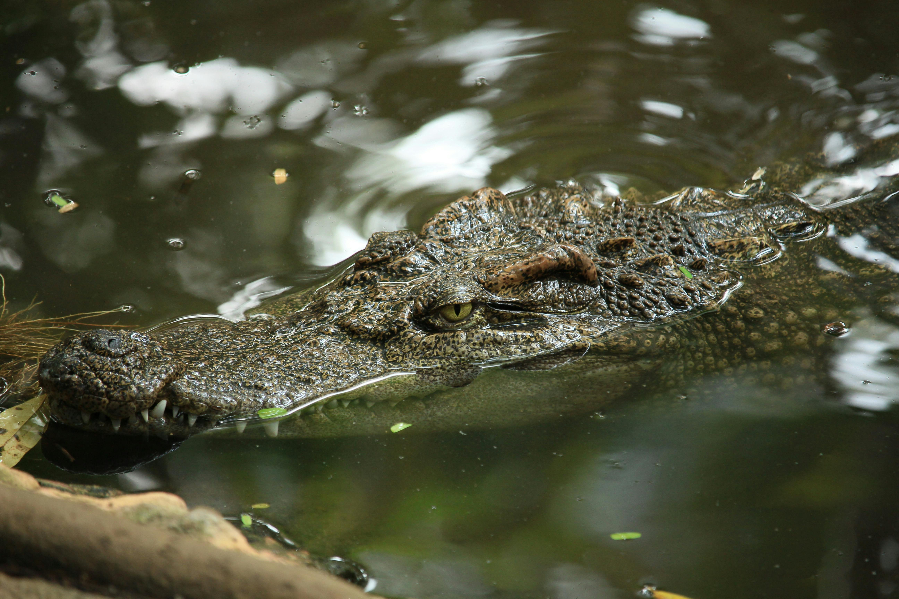

Trip Offers


Wycieczki:
Wasini:
It is a picturesque island located in the heart of the Indian Ocean, offering extraordinary attractions for nature lovers and travelers alike. During the tour, you will have the opportunity to immerse yourself in the colorful underwater world while snorkeling and diving, as well as encounter dolphins, which will add charm to this unforgettable experience. It's a perfect opportunity to enjoy the beauty of nature and explore the fascinating underwater world of Kenya.

Mombasa:
Mombasa is a city full of fascinating attractions and places worth visiting. You can see a wood carving factory, a Hindu temple, Mombasa Gate, and the oldest market where you can buy spices, coffee, and tea. While strolling through the old town, you will reach Fort Jesus, and finally, you can relax at the Avenue of Baobabs, enjoying the beauty of nature.
Haller Park:
In Haller Park, you can experience unforgettable encounters with wild animals and discover the fascinating world of nature. While feeding giraffes, hippos, and crocodiles, you can observe these impressive animals in their natural environment. Additionally, in the zoo, you can see various species of animals, from antelopes to monkeys, and admire the beauty of butterflies. It's a unique experience that allows you to enjoy the beauty of nature and discover its diversity.

Shimba Hills:
In Shimba Hills, the main attraction is the impressive waterfall, which attracts many travelers. However, that's not all! As a state forest, Shimba Hills also offers the opportunity to observe various species of animals that live in the surrounding forests. While walking through the park, you can encounter many wild animals, making a visit to Shimba Hills a thrilling nature experience.
Funzi:
Funzi is a place where the main attraction is crocodiles, which capture the attention of many visitors. However, in Funzi, you can also enjoy the opportunity for swimming. It's a unique combination where nature and recreational opportunities come together in one place, creating an unforgettable experience for all who visit Funzi.
Safari:
Tsavo East:
I am organizing a safari to Tsavo East National Park, which can last for 2 or 1 days, the journey can be tiring for older people and children. Tsavo East Park, known as one of the largest national parks in Kenya, is characterized by its rich wildlife and diverse landscapes. There are many species of animals here, including elephants, lions, leopards, rhinos, giraffes, and many others. In addition, the park also offers scenic views, including vast savannas, rocky gorges, and lush riverine forests, making it an ideal place for wildlife observation and exploration of extraordinary natural areas.

Taita Hills:
This is a 2-day expedition with the option of overnight stay in characteristic cottages on stilts. These cottages, placed on wooden stilts, not only provide a unique view of the surrounding areas but also ensure a comfortable and safe stay. In the morning, you can observe the sunrise over the beautiful hills and admire the surrounding nature, making your stay in Taita Hills even more magical and unforgettable.

Masai Mara:
Masai Mara is one of the most renowned safari destinations in Kenya. It is home to vast herds of wild animals, including elephants, lions, leopards, and rhinos. The park is also the site of the annual Great Migration of animals, which is a spectacular natural spectacle. In addition to fascinating encounters with wildlife, Masai Mara offers picturesque landscapes and the opportunity to learn about the culture of the Maasai tribe. It's an unforgettable place worth visiting for unique safari experiences and discovering the beauty of African nature.

Naivasha Lake:
Naivasha Lake is a picturesque safari destination in Kenya, known for its rich diversity of fauna and flora. It is a paradise for bird lovers, with over 400 species of birds, including pelicans, flamingos, and fish eagles. In addition to bird watching, the lake area is also home to hippos and buffaloes. Additionally, Lake Naivasha offers opportunities for relaxation and recreation, such as walks in the surrounding areas, boat trips on the lake, and fishing. It's a charming place worth visiting for unforgettable nature experiences and the tranquility of the surrounding environment.